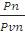
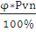
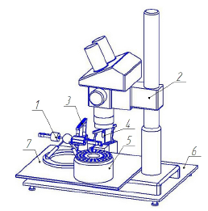

электронный
ресурс по учебной дисциплине 1-58 01 01 - "ИНЖЕНЕРНО-ПСИХОЛОГИЧЕСКОЕ ОБЕСПЕЧЕНИЕ ИНФОРМАЦИОННЫХ ТЕХНОЛОГИЙ"
|
||
| Оглавление | Программа | Теория | Практика | Контроль знаний | Об авторах | ||
|
Практика
ЛАБОРАТОРНАЯ РАБОТА №13 Изучение методов сборки и герметизации микроизделий Цель работы: Исследование методов сборки и герметизации микроизделий, изучение основных характеристик процессов. Написать программу и построить зависимости выходных параметров от входных. Теоретические сведения Методы сборки и герметизация. 1) Разделение пластин и их сортировка. Кремниевые пластины могут быть разделены на отдельные кристаллы различными способами, которые предусматривают скрайбирование поверхности кремния, разламывание пластины на отдельные кристаллы, если скрайбирование не проникает на всю толщину пластины, и сортировку электрически годных отдельных кристаллов в форме, пригодной для следующей стадии сборки. Частичное скрайбирование может быть выполнено импульсным лазерным лучом, скрайбирующим инструментом с алмазным наконечником и полотном пилы с алмазной кромкой. Алмазный пропил предпочтительнее для частичного скрайбирования и полного разделения пластины, так как обеспечивает получение более ровного края со значительно меньшими сколами и трещинами. 2) Монтаж кристаллов. Монтаж кристаллов состоит из двух стадий. На первой стадии кристалл обратной стороной механически прикрепляют к соответствующему основанию. Это прикрепление иногда позволяет создать электрические контакты к обратной стороне кристалла. Двумя основными методами монтажа кристалла является соединение его с корпусом твердыми припоями или эвтектикой и полимерами. На второй стадии контактные площадки со схемной стороны кристалла электрически соединяются с выводами корпуса. Существуют три метода подсоединения к контактным площадкам кристалла: проволочное соединение, автоматизированное соединение на ленточном носителе и соединение методом перевернутого кристалла. Соединение твердыми припоями (или эвтектикой).
Соединение твердыми припоями является по существу пайкой, где в качестве припоя используют эвтектические сплавы, содержащие кремний. На следующем рисунке показана схема соединения кристалла эвтектикой: Соединение кристалла полимерным клеем. В качестве материала для соединения кристалла в настоящее время значительный интерес представляет эпоксидный клей с серебряным наполнителем. Серебряный наполнитель делает эти материалы как электропроводными для обеспечения низкого сопротивления между кристаллом и подложкой, так и теплопроводными, в результате чего существует хороший теплоотвод от кристалла к основанию корпуса. Проволочное соединение. Соединение проволокой является наиболее важным способом монтажа кремниевых. Соединение проволокой всегда выполняется после того, как ИС отсортированы из разделенной на кристаллы пластины, а кристалл смонтирован в корпусе. Оно может быть выполнено золотой проволокой методом термокомпрессии, ультразвуковым и термозвуковым методами или алюминиевой проволокой ультразвуковым методом. Ультразвуковая сварка. Ультразвуковая сварка осуществляется при помощи непрерывно генерируемого ультразвука частотой 18-180 кГц. мощностью 0,01 - 10 кВт. Сварка происходит при одновременном воздействии на свариваемые поверхности механических ВЧ колебаний, внешнего давления, прикладываемого перпендикулярно к свариваемым поверхностям и теплового эффекта от ВЧ колебаний. Тепловое действие ВЧ ультразвуковых колебаний может сочетаться c дополнительным местным импульсным нагревом заготовок от отдельного внешнего источника теплоты. Для герметизации интегральных схем обычно используют эпоксидные смолы и кремнийорганические соединения. При проведении герметизация – кристалл присоединяется к корпусу. Производство корпусов для отдельных кристаллов в основном базируется на технологии тугоплавкой керамики или использовании выводных рамок и формованных пластмасс. Керамические корпусы обычно применяются для герметизации современных приборов, где требуется максимальная надежность. Для обычных приборов, где критичным параметром является стоимость и необходимо герметизирующее уплотнение, применяют керамические плоские корпусы с двухрядным расположением выводов. В этих корпусах использована комбинация выводной рамки, прессованных деталей из тугоплавкой керамики и герметизации стеклом. Пластмассовые корпусы обычно предназначают для приборов, где преобладающим фактором является стоимость и не требуется высокая герметичность. До недавнего времени пластмассовые корпусы обладали меньшей надежностью, чем керамические. Однако в настоящее время технология пластмассовых корпусов значительно усовершенствована и является высоконадежной при соответствующем управлении процессом их изготовления. Относительную влажность в объеме корпуса можно найти по формуле (1): φ=*100% (1) где pn – давление пара, а pvn – давление насыщенного пара. Давление пара определяется по формуле (2) pn= (2) либо с помощью уравнение Мендеева-Клайперона pnV=nRT ; (3) Для сборки микроизделий также применяются автоматизированный комплекса микросборки (АКМ) (один из них представлен на рисунке 1) предназначен для автоматической сборки таких мини- и микроизделий, как объектив мобильного телефона, шестеренчатый микронасос и др. В состав АКМ входят мини-робот, выполненный на базе сферического шарнира, микроскоп с системой технического зрения, вибропитатели, устройство для склеивания микродеталей и кассета для готовых изделий. Все приводы модулей АКМ выполнены на базе пьезоэлектрических преобразователей — актюаторов, которые позволяют уменьшить габариты мини-робота и других устройств, а также повысить их точность позиционирования. Схема АКМ приведена на рис. 1.  Рисунок 1 – Схема автоматизированного комплекса микросборки на базе пьезоэлектрических актюаторов Микроскоп 2 закреплен на плите 6 с резиновыми опорами для защиты от вибраций. С его помощью нам можно контролировать процесс сборки микродеталей. Для транспортировки деталей на рабочую позицию используются вибропитатели 3. При подаче гармонического напряжения на пьезоэлектрические актюаторы вибропитателя, которые закреплены на нем, микродетали движутся по лотку до нужного места. Устройство для склеивания корпуса микрообъектива видеокамеры и его линзы 4 и вибропитатели 3 расположены по окружности на траектории движения схвата миниробота 1. Вибропитатели установлены на отдельной плите с целью защиты АКМ от вибраций во время сборки микрообъектива видеокамеры. Задание для выполнения лабораторной работы Каково необходимое количество кремния (в граммах) для взаимодействия с влагой, содержащейся в полости корпуса для размещения кристалла объемом V с концентрацией 0,5% ? Расчет проведите для условий атмосферного давления и комнатной температуры в полости. Варианты заданий:
Порядок выполнения работы 1. Напишите программу, обеспечивающую решение задачи. 2. Постройте зависимости выходных параметров от входных. 3. Оформите отчет и защитите лабораторную работу. Содержание отчета 1. Цель работы. 2. Краткие теоретические сведения. 3. Решение задачи. 4. Код программы и скриншоты рабочих окон. 5. Зависимости выходных параметров от выходных. 6. Выводы по работе. Контрольные вопросы 1. Опишите сущность процесса разделения пластин и их сортировки. 2. Из каких стадий состоит процесс монтажа кристаллов? 3. Какие существуют методы монтажа кристаллов? 4. Что такое герметизация интегральных микросхем? 5. Какие корпуса применяются для проведения герметизации? 6. Назовите основные элементы, входящие в состав автоматизированного комплекса микросборки. Практика
|
| (С) БГУИР |